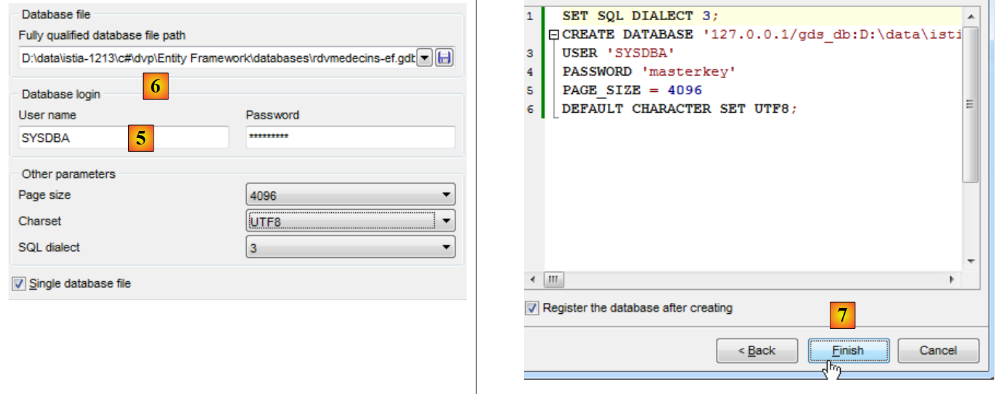
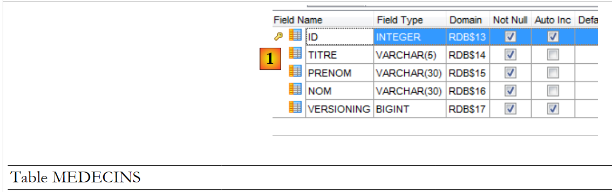
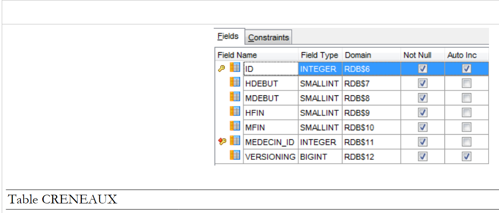
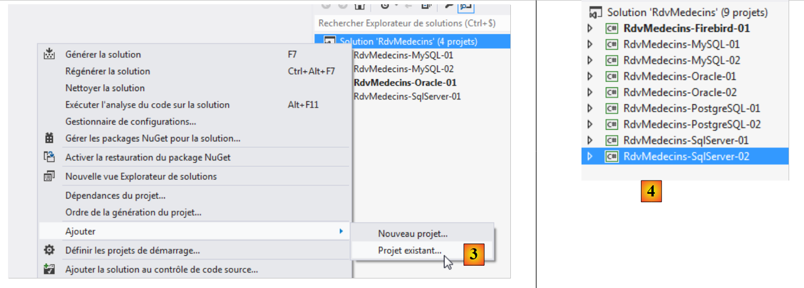
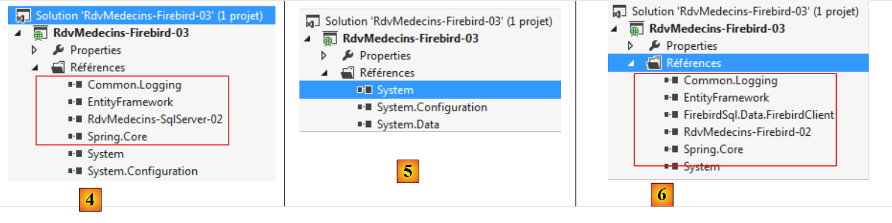

7. Fallstudie mit Firebird 2.1
7.1. Installation der Tools
Folgende Tools müssen installiert werden:
- das DBMS: [http://www.firebirdsql.org/en/firebird-2-1-5/];
- ein Verwaltungstool: EMS SQL Manager für InterBase/Firebird Freeware [http://www.sqlmanager.net/fr/products/ibfb/manager/download].
In den folgenden Beispielen lautet der Benutzername sysdba und das Passwort masterkey.
Starten wir Firebird und anschließend das Tool [SQL Manager Lite for Firebird], mit dem wir das DBMS verwalten werden.
 |
- In [1] starten wir das Firebird-DBMS über das Startmenü. Hier wurde das DBMS nicht als Windows-Dienst installiert;
- in [2] wird der Dienst gestartet. In der unteren rechten Ecke des Bildschirms erscheint ein Symbol. Durch einen Rechtsklick darauf können Sie das DBMS beenden.
Wir starten nun das Tool [SQL Manager Lite for Firebird], mit dem wir das DBMS verwalten werden [3].
 |
- In [4] erstellen wir eine neue Datenbank;
- In [5] bestätigen wir;
 |
- In [5] melden wir uns als SYSDBA / masterkey an;
- In [6] geben wir den Speicherort der zu erstellenden Datei an. Die Datenbank wird als einzelne Datei erstellt;
- In [7] überprüfen wir die auszuführende SQL-Anweisung;
 |
- In [8] wurde die Datenbank erstellt. Sie muss nun in [EMS Manager] registriert werden. Die Angaben sind korrekt. Klicken Sie auf [OK];
- Melden Sie sich in [9] an;
- In [10] zeigt [EMS Manager] die Datenbank an, die derzeit leer ist.
Wir werden nun ein VS 2012-Projekt mit dieser Datenbank verbinden.
7.2. Erstellen der Datenbank aus den Entitäten
Zunächst duplizieren wir den Projektordner [RdvMedecins-SqlServer-01] in [RdvMedecins-Firebird-01] [1]:
 |
- In [2] entfernen wir in VS 2012 das Projekt [RdvMedecins-SqlServer-01] aus der Lösung;
 |
- in [3] wurde das Projekt entfernt;
- in [4] fügen wir ein weiteres hinzu. Dieses stammt aus dem Ordner [RdvMedecins-Firebird-01], den wir zuvor erstellt haben;
 |
- In [5] heißt das geladene Projekt [RdvMedecins-SqlServer-01];
- In [6] ändern wir seinen Namen in [RdvMedecins-Firebird-01]
 |
- In [7] fügen wir der Lösung ein weiteres Projekt hinzu. Dieses Projekt stammt aus dem Ordner [RdvMedecins-SqlServer-01] des Projekts, das wir zuvor aus der Lösung entfernt haben;
- in [8] wurde das Projekt [RdvMedecins-SqlServer-01] wieder zur Lösung hinzugefügt.
Das Projekt [RdvMedecins-Firebird-01] ist identisch mit dem Projekt [RdvMedecins-SqlServer-01]. Wir müssen einige Änderungen vornehmen. In [App.config] ändern wir die Verbindungszeichenfolge und die [DbProviderFactory], die für jedes DBMS angepasst werden müssen.
<!-- connection chain on base -->
<connectionStrings>
<add name="monContexte" connectionString="User=SYSDBA;Password=masterkey;Database=D:\data\istia-1213\c#\dvp\Entity Framework\databases\firebird\RDVMEDECINS-EF.GDB;DataSource=localhost;
Port=3050;Dialect=3;Charset=NONE;Role=;Connection lifetime=15;Pooling=true;MinPoolSize=0;MaxPoolSize=50;Packet Size=8192;ServerType=0;" providerName="FirebirdSql.Data.FirebirdClient" />
</connectionStrings>
<!-- the factory provider -->
<system.data>
<DbProviderFactories>
<add name="Firebird Client Data Provider" invariant="FirebirdSql.Data.FirebirdClient" description=".Net Framework Data Provider for Firebird" type="FirebirdSql.Data.FirebirdClient.FirebirdClientFactory, FirebirdSql.Data.FirebirdClient, Version=2.7.7.0, Culture=neutral, PublicKeyToken=3750abcc3150b00c" />
</DbProviderFactories>
</system.data>
- Zeile 3: Benutzername und Passwort sowie der vollständige Pfad zur Firebird-Datenbank;
- Zeilen 8–10: die DbProviderFactory. Zeile 9 verweist auf eine DLL [FirebirdSql.Data.FirebirdClient], die wir nicht haben. Wir können sie über NuGet [1] beziehen:
 |
- Geben Sie in [2] das Stichwort „firebird“ in das Suchfeld ein;
- Wählen Sie in [3] das Paket [Firebird ADO.NET Data Provider] aus. Dies ist ein ADO.NET-Konnektor für Firebird;
 |
- unter [4] die neue Referenz;
- in [5], in [App.config], müssen Sie die richtige Version der DLL angeben. Diese finden Sie in den Eigenschaften der DLL.
In der Datei [Entities.cs] müssen Sie das Schema der zu generierenden Tabellen anpassen:
[Table("MEDECINS")]
public class Medecin : Personne
{...}
[Table("CLIENTS")]
public class Client : Personne
{...}
[Table("CRENEAUX")]
public class Creneau
{...}
[Table("RVS")]
public class Rv
{...}
Hier haben die Tabellen kein Schema.
Wir konfigurieren die Ausführung des Projekts:
 |
- In [1] geben wir der zu generierenden Assembly einen anderen Namen;
- in [2] geben wir außerdem einen anderen Standard-Namespace an;
- in [3] geben wir das auszuführende Programm an.
Zu diesem Zeitpunkt gibt es keine Kompilierungsfehler. Führen wir das Programm [CreateDB_01] aus. Wir erhalten die folgende Ausnahme:
Wir erinnern uns, dass wir denselben Fehler bereits bei MySQL, Oracle und PostgreSQL festgestellt haben. Dies hängt mit dem Typ des Timestamp-Feldes in den Entitäten zusammen. Wir nehmen dieselbe Änderung vor wie bei den beiden vorherigen DBMS. In den Entitäten ersetzen wir die drei Zeilen
[Column("TIMESTAMP")]
[Timestamp]
public byte[] Timestamp { get; set; }
mit folgendem Inhalt:
[ConcurrencyCheck]
[Column("VERSIONING")]
public int? Versioning { get; set; }
Wir ändern daher den Spaltentyp von byte[] in int?. Im DBMS verwenden wir gespeicherte Prozeduren, um diese Ganzzahl jedes Mal um eins zu erhöhen, wenn eine Zeile eingefügt oder geändert wird.
Wir nehmen die oben genannte Änderung für alle vier Entitäten vor und führen die Anwendung anschließend erneut aus. Daraufhin erhalten wir die folgende Fehlermeldung:
Zeile 1 weist darauf hin, dass die Datenbank in Gebrauch ist. Ich glaube nicht, dass das der Fall war, und ich konnte dieses Problem nicht beheben.
Macht nichts. Wir werden die Datenbank [RDVMEDECINS-EF] manuell mit dem Tool [EMS Manager for Firebird] erstellen. Wir werden nicht jeden Schritt beschreiben, sondern nur die wichtigsten.
Die Firebird-Datenbank sieht wie folgt aus:
Die Tabellen
 |
- In [1] ist
IDein Primärschlüssel mit dem Attribut</span>*Autoincrement*. Er wird automatisch vom DBMS generiert;
 |
 |
 |
Die verschiedenen Tabellen verfügen über dieselben Primär- und Fremdschlüssel wie in den vorherigen Beispielen. Die Fremdschlüssel sind mit dem Attribut ON DELETE CASCADE versehen.
Die Generatoren
Wie bei Oracle und PostgreSQL haben wir Generatoren für fortlaufende Nummern erstellt. Es gibt insgesamt 5 davon [1].
 |
- [CLIENTS_ID_GEN] wird verwendet, um den Primärschlüssel für die Tabelle [CLIENTS] zu generieren;
- [MEDECINS_ID_GEN] wird zur Generierung des Primärschlüssels für die Tabelle [MEDECINS] verwendet;
- [CRENEAUX_ID_GEN] wird zur Generierung des Primärschlüssels für die Tabelle [CRENEAUX] verwendet;
- [RVS_ID_GEN] wird zur Generierung des Primärschlüssels für die Tabelle [RVS] verwendet;
- [VERSIONS_GEN] wird verwendet, um die Werte für die Spalten [VERSIONING] in allen Tabellen zu generieren.
Trigger
Ein Trigger ist eine Prozedur, die vom DBMS vor oder nach einem Ereignis (Insert, Update, Delete) in einer Tabelle ausgeführt wird. Wir haben 8 davon [1]:
 |
Sehen wir uns den DDL-Code für den Trigger [BI_CLIENTS_ID] an, der die Spalte [ID] der Tabelle [CLIENTS] füllt:
- Zeile 2: Vor jedem Einfügen in die Tabelle [CLIENTS];
- Zeilen 6–7: Wenn die Spalte „ID“ NULL ist, weise ihr den nächsten Wert aus dem Zahlengenerator [CLIENTS_ID_GEN] zu.
Die Trigger [BI_CLIENTS_ID, BI_MEDECINS_ID, BI_CRENEAUX_ID, BI_RVS_ID] sind alle auf die gleiche Weise aufgebaut.
Sehen wir uns nun den DDL-Code für den Trigger [CLIENTS_VERSION_TRIGGER] an, der die Spalte [VERSIONING] der Tabelle [CLIENTS] füllt:
- Zeilen 1–3: Vor jeder INSERT- oder UPDATE-Operation an der Tabelle [CLIENTS];
- Zeile 6: Die Spalte ["VERSIONING"] erhält den nächsten Wert vom Zahlengenerator [VERSIONS_GEN]. Dieser Generator füllt die Spalten ["VERSIONING"] der vier Tabellen.
Die Trigger [MEDECINS_VERSION_TRIGGER, CRENEAUX_VERSION_TRIGGER, RVS_VERSION_TRIGGER] funktionieren ähnlich.
Das Skript zur Erstellung der Tabellen in der Firebird-Datenbank [RDVMEDECINS-EF] wurde im Ordner [RdvMedecins / databases / Firebird] abgelegt. Der Leser kann es laden und ausführen, um die Tabellen zu erstellen.
Sobald dies erledigt ist, können die verschiedenen Programme im Projekt ausgeführt werden. Sie liefern dieselben Ergebnisse wie bei SQL Server, mit Ausnahme des Programms [ModifyDetachedEntities], das aus demselben Grund abstürzt, aus dem es auch bei Oracle und MySQL abgestürzt ist. Das Problem wird auf dieselbe Weise behoben. Kopieren Sie einfach das Programm [ModifyDetachedEntities] aus dem Projekt [RdvMedecins-Oracle-01] in das Projekt [RdvMedecins-Firebird-01].
7.3. Mehrschichtige Architektur auf Basis von EF 5
Wir kehren zu unserer in Absatz 2 beschriebenen Fallstudie zurück.
 |
Zunächst erstellen wir die [DAO]-Datenzugriffsschicht. Dazu duplizieren wir das VS 2012-Konsolenprojekt [RdvMedecins-SqlServer-02] in [RdvMedecins-Firebird-02] [1]:
 |
- In [2] löschen wir das Projekt [RdvMedecins-SqlServer-02];
 |
- In [3] fügen wir der Lösung ein bestehendes Projekt hinzu. Wir nehmen es aus dem soeben erstellten Ordner [RdvMedecins-Firebird-02];
- in [4] hat das neue Projekt denselben Namen wie das gelöschte. Wir werden seinen Namen ändern;
 |
- In [5] haben wir den Projektnamen geändert;
- In [6] ändern wir einige seiner Eigenschaften, wie hier den Baugruppennamen;
- In [7] wird der Ordner [Models] gelöscht und durch den Ordner [Models] aus dem Projekt [RdvMedecins-Firebird-01] ersetzt. Dies liegt daran, dass beide Projekte dieselben Modelle verwenden.
 |
- in [8] die aktuellen Verweise des Projekts;
- In [9] wurde der Firebird-ADO.NET-Konnektor mithilfe des NuGet-Tools hinzugefügt.
Ersetzen Sie in der Datei [App.config] die SQL-Server-Datenbankinformationen durch die der Firebird-Datenbank. Diese Informationen finden Sie in der Datei [App.config] des Projekts [RdvMedecins-Firebird-01]:
<!-- connection chain on base -->
<connectionStrings>
<add name="monContexte" connectionString="User=SYSDBA;Password=masterkey;Database=D:\data\istia-1213\c#\dvp\Entity Framework\databases\firebird\RDVMEDECINS-EF.GDB;DataSource=localhost;
Port=3050;Dialect=3;Charset=NONE;Role=;Connection lifetime=15;Pooling=true;MinPoolSize=0;MaxPoolSize=50;Packet Size=8192;ServerType=0;" providerName="FirebirdSql.Data.FirebirdClient" />
</connectionStrings>
<!-- the factory provider -->
<system.data>
<DbProviderFactories>
<add name="Firebird Client Data Provider" invariant="FirebirdSql.Data.FirebirdClient" description=".Net Framework Data Provider for Firebird" type="FirebirdSql.Data.FirebirdClient.FirebirdClientFactory, FirebirdSql.Data.FirebirdClient, Version=2.7.7.0, Culture=neutral, PublicKeyToken=3750abcc3150b00c" />
</DbProviderFactories>
</system.data>
Auch die von Spring verwalteten Objekte ändern sich. Derzeit haben wir:
<!-- spring configuration -->
<spring>
<context>
<resource uri="config://spring/objects" />
</context>
<objects xmlns="http://www.springframework.net">
<object id="rdvmedecinsDao" type="RdvMedecins.Dao.Dao,RdvMedecins-SqlServer-02" />
</objects>
</spring>
Zeile 7 verweist auf die Assembly für das Projekt [RdvMedecins-SqlServer-02]. Die Assembly lautet nun [RdvMedecins-Firebird-02].
Damit sind wir bereit, den Test der [DAO]-Schicht auszuführen. Zunächst müssen wir sicherstellen, dass die Datenbank gefüllt ist (mithilfe des Programms [Fill] aus dem Projekt [RdvMedecins-Firebird-01]). Der Test läuft erfolgreich ab.
Wir erstellen die DLL des Projekts wie beim Projekt [RdvMedecins-SqlServer-02] und sammeln alle DLLs des Projekts in einem Ordner [lib], der in [RdvMedecins-Firebird-02] angelegt wurde. Diese dienen als Referenzen für das nachfolgende Webprojekt [RdvMedecins-Firebird-03].
 |
Wir sind nun bereit, die [ASP.NET]-Schicht unserer Anwendung zu erstellen:
 |
Wir beginnen mit dem Projekt [RdvMedecins-SqlServer-03]. Wir werden diesen Projektordner in [RdvMedecins-Firebird-03] duplizieren [1]:
 |
- In [2] öffnen wir mit VS 2012 Express for the Web die Lösung im Ordner [RdvMedecins-Firebird-03];
- in [3] ändern wir sowohl den Namen der Lösung als auch den Namen des Projekts;
 |
- in [4] die aktuellen Verweise des Projekts;
- in [5] löschen wir sie;
- in [6], um sie durch Verweise auf die DLLs zu ersetzen, die wir gerade in einem [lib]-Ordner innerhalb des Projekts [RdvMedecins-Firebird-02] gespeichert haben.
Nun müssen wir nur noch die Datei [Web.config] ändern. Wir ersetzen ihren aktuellen Inhalt durch den Inhalt der Datei [App.config] aus dem Projekt [RdvMedecins-Firebird-02]. Sobald dies erledigt ist, führen wir das Webprojekt aus. Es funktioniert. Vergessen Sie nicht, die Datenbank zu füllen, bevor Sie die Webanwendung ausführen.